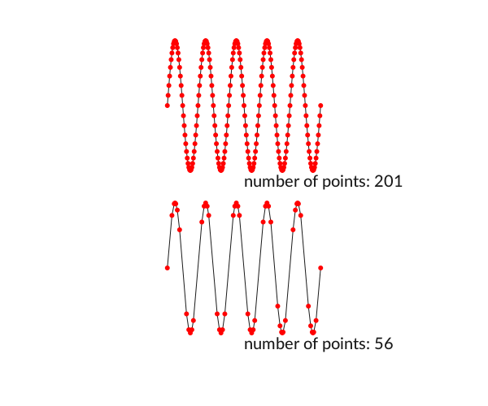

Polygons and paths
For drawing shapes, Luxor provides polygons and paths.
A polygon is an ordered collection of Points stored in an array.
A path is a sequence of one or more straight and curved (circular arc or Bézier curve) segments. Paths can consist of subpaths. Luxor maintains a 'current path', to which you can add lines and curves until you finish with a stroke or fill instruction.
Luxor also provides a BezierPath type, which is an array of four-point tuples, each of which is a Bézier cubic curve section.

Regular polygons ("ngons")
A polygon is an array of points. The points can be joined with straight lines.
You can make regular polygons — from triangles, pentagons, hexagons, septagons, heptagons, octagons, nonagons, decagons, and on-and-on-agons — with ngon().
cols = distinguishable_colors(10)
setline(2)
fontsize(12)
tiles = Tiler(700, 600, 3, 3)
for (pos, n) in tiles
@layer begin
translate(pos)
p = ngon(O, 80, n, vertices=true)
sethue(cols[n])
poly(p, :fill, close=true)
sethue("black")
poly(p, :stroke, close=true)
circle(O, 4, :fill)
label.([string(i) for i in 1:n], slope.(O, p), p, offset=5)
end
endThe initial orientation of the polygon defaults to 0.

If you want to specify the side length rather than the circumradius, use ngonside().
for i in 20:-1:3
sethue(i/20, 0.5, 0.7)
ngonside(O, 75, i, 0, :fill)
sethue("black")
ngonside(O, 75, i, 0, :stroke)
end
The functions return the vertices, or you can use the vertices=true option.
ngon(O, 10, 5) Point(3.0901699437494745, 9.510565162951535)
Point(-8.090169943749473, 5.877852522924733)
Point(-8.090169943749475, -5.87785252292473)
Point(3.0901699437494723, -9.510565162951536)
Point(10.0, -2.4492935982947065e-15)Luxor.ngon — Functionngon(x, y, radius, sides=5, orientation=0, action=:nothing;
vertices=false, reversepath=false)Draw a regular polygon centered at point centerpos.
ngon(centerpos, radius, sides=5, orientation=0, action=:nothing;
vertices=false,
reversepath=false)Draw a regular polygon centered at point centerpos.
Find the vertices of a regular n-sided polygon centered at x, y with circumradius radius.
The polygon is constructed counterclockwise, starting with the first vertex drawn below the positive x-axis.
If you just want the raw points, use keyword argument vertices=true, which returns the array of points. Compare:
ngon(0, 0, 4, 4, 0, vertices=true) # returns the polygon's points:
4-element Array{Luxor.Point, 1}:
Luxor.Point(2.4492935982947064e-16, 4.0)
Luxor.Point(-4.0, 4.898587196589413e-16)
Luxor.Point(-7.347880794884119e-16, -4.0)
Luxor.Point(4.0, -9.797174393178826e-16)whereas
ngon(0, 0, 4, 4, 0, :close) # draws a polygonLuxor.ngonside — Functionngonside(centerpoint::Point, sidelength::Real, sides::Int=5, orientation=0,
action=:nothing; kwargs...)Draw a regular polygon centered at centerpoint with sides sides of length sidelength.
Stars
Use star() to make a star. You can draw it immediately, or use the points it can create.
tiles = Tiler(400, 300, 4, 6, margin=5)
for (pos, n) in tiles
randomhue()
star(pos, tiles.tilewidth/3, rand(3:8), 0.5, 0, :fill)
end
The ratio determines the length of the inner radius compared with the outer.
tiles = Tiler(500, 250, 1, 6, margin=10)
for (pos, n) in tiles
star(pos, tiles.tilewidth/2, 5, rescale(n, 1, 6, 1, 0), 0, :stroke)
end
Luxor.star — Functionstar(xcenter, ycenter, radius, npoints=5, ratio=0.5, orientation=0, action=:nothing;
vertices = false,
reversepath=false)Make a star. ratio specifies the height of the smaller radius of the star relative to the larger.
Use vertices=true to return the vertices of a star instead of drawing it.
star(center, radius, npoints=5, ratio=0.5, orientation=0, action=:nothing;
vertices = false, reversepath=false)Draw a star centered at a position:
Polygons
Use poly() to draw lines connecting the points and/or just fill the area:
tiles = Tiler(600, 250, 1, 2, margin=20)
tile1, tile2 = collect(tiles)
randompoints = [Point(rand(-100:100), rand(-100:100)) for i in 1:10]
gsave()
translate(tile1[1])
poly(randompoints, :stroke)
grestore()
gsave()
translate(tile2[1])
poly(randompoints, :fill)
grestore()
Luxor.poly — Functionpoly(bbox::BoundingBox, :action; kwargs...)Make a polygon around the BoundingBox in bbox.
Draw a polygon.
poly(pointlist::Array{Point, 1}, action = :nothing;
close=false,
reversepath=false)A polygon is an Array of Points. By default poly() doesn't close or fill the polygon, to allow for clipping.
A polygon can contain holes. The reversepath keyword changes the direction of the polygon. The following piece of code uses ngon() to make and draw two paths, the second forming a hole in the first, to make a hexagonal bolt shape:
setline(5)
sethue("gold")
line(Point(-200, 0), Point(200, 0), :stroke)
sethue("orchid4")
ngon(0, 0, 60, 6, 0, :path)
newsubpath()
ngon(0, 0, 40, 6, 0, :path, reversepath=true)
fillstroke()
The prettypoly() function can place graphics at each vertex of a polygon. After the polygon action, the supplied vertexfunction function is evaluated at each vertex. For example, to mark each vertex of a polygon with a randomly-colored circle:
apoly = star(O, 70, 7, 0.6, 0, vertices=true)
prettypoly(apoly, :fill, () ->
begin
randomhue()
circle(O, 10, :fill)
end,
close=true)
An optional keyword argument vertexlabels lets you pass a function that can number each vertex. The function can use two arguments, the current vertex number, and the total number of points in the polygon:
apoly = star(O, 80, 5, 0.6, 0, vertices=true)
prettypoly(apoly,
:stroke,
vertexlabels = (n, l) -> (text(string(n, " of ", l), halign=:center)),
close=true)
Luxor.prettypoly — Functionprettypoly(bbox::BoundingBox, :action; kwargs...)Make a decorated polygon around the BoundingBox in bbox. The vertices are in the order: bottom left, top left, top right, and bottom right.
prettypoly(points::Array{Point, 1}, action=:nothing, vertexfunction = () -> circle(O, 2, :stroke);
close=false,
reversepath=false,
vertexlabels = (n, l) -> ()
)Draw the polygon defined by points, possibly closing and reversing it, using the current parameters, and then evaluate the vertexfunction function at every vertex of the polygon.
The default vertexfunction draws a 2 pt radius circle.
To mark each vertex of a polygon with a randomly colored filled circle:
p = star(O, 70, 7, 0.6, 0, vertices=true)
prettypoly(p, :fill, () ->
begin
randomhue()
circle(O, 10, :fill)
end,
close=true)The optional keyword argument vertexlabels lets you supply a function with two arguments that can access the current vertex number and the total number of vertices at each vertex. For example, you can label the vertices of a triangle "1 of 3", "2 of 3", and "3 of 3" using:
prettypoly(triangle, :stroke,
vertexlabels = (n, l) -> (text(string(n, " of ", l))))Recursive decoration is possible:
decorate(pos, p, level) = begin
if level < 4
randomhue()
scale(0.25, 0.25)
prettypoly(p, :fill, () -> decorate(pos, p, level+1), close=true)
end
end
apoly = star(O, 100, 7, 0.6, 0, vertices=true)
prettypoly(apoly, :fill, () -> decorate(O, apoly, 1), close=true)
Polygons can be simplified using the Douglas-Peucker algorithm (non-recursive version), via simplify().
sincurve = [Point(6x, 80sin(x)) for x in -5π:π/20:5π]
prettypoly(collect(sincurve), :stroke,
() -> begin
sethue("red")
circle(O, 3, :fill)
end)
text(string("number of points: ", length(collect(sincurve))), 0, 100)
translate(0, 200)
simplercurve = simplify(collect(sincurve), 0.5)
prettypoly(simplercurve, :stroke,
() -> begin
sethue("red")
circle(O, 3, :fill)
end)
text(string("number of points: ", length(simplercurve)), 0, 100)
Luxor.simplify — FunctionSimplify a polygon:
simplify(pointlist::Array, detail=0.1)detail is the smallest permitted distance between two points in pixels.
The isinside() function returns true if a point is inside a polygon.
apolygon = star(O, 200, 8, 0.5, 0, vertices=true)
for pt in collect(first.(Table(30, 30, 15, 15)))
sethue(noise(pt.x/600, pt.y/600), noise(pt.x/300, pt.y/300), noise(pt.x/250, pt.y/250))
isinside(pt, apolygon, allowonedge=true) ? circle(pt, 8, :fill) : circle(pt, 3, :fill)
end
Luxor.isinside — Functionisinside(p::Point, bb:BoundingBox)Returns true if pt is inside bounding box bb.
isinside(p, pol; allowonedge=false)Is a point p inside a polygon pol? Returns true if it does, or false.
This is an implementation of the Hormann-Agathos (2001) Point in Polygon algorithm.
The classification of points lying on the edges of the target polygon, or coincident with its vertices is not clearly defined, due to rounding errors or arithmetical inadequacy. By default these will generate errors, but you can suppress these by setting allowonedge to true.
You can use randompoint() and randompointarray() to create a random Point or list of Points.
pt1 = Point(-100, -100)
pt2 = Point(100, 100)
sethue("gray80")
map(pt -> circle(pt, 6, :fill), (pt1, pt2))
box(pt1, pt2, :stroke)
sethue("red")
circle(randompoint(pt1, pt2), 7, :fill)
sethue("blue")
map(pt -> circle(pt, 2, :fill), randompointarray(pt1, pt2, 100))
Luxor.randompoint — Functionrandompoint(lowpt, highpt)Return a random point somewhere inside the rectangle defined by the two points.
randompoint(lowx, lowy, highx, highy)Return a random point somewhere inside a rectangle defined by the four values.
Luxor.randompointarray — Functionrandompointarray(lowpt, highpt, n)Return an array of n random points somewhere inside the rectangle defined by two points.
randompointarray(lowx, lowy, highx, highy, n)Return an array of n random points somewhere inside the rectangle defined by the four coordinates.
Quickly changing polygons
If you want to quickly and permanently modify a polygon, there's polymove!(), polyscale!(), polyreflect!(), and polyrotate!().
shape = star(O, 10, 5, 0.5, 0, vertices=true)
circle(O, 3, :stroke)
polymove!(shape, O, O + (0, 50))
poly(shape, :stroke, close=true)
for i in 1:20
poly(polyrotate!(shape, π/5), :fill, close=true)
polyscale!(shape, 19//18)
endThe polygon is continually modified (notice the ! in the function names).

pgon = randompointarray(BoundingBox()/2 ..., 10)
polymove!(pgon, O, Point(-80, 0))
poly(pgon, :fill, close=true)
# reflect in y axis:
polyreflect!(pgon, Point(0, 0), Point(0, 100))
sethue("blue")
poly(pgon, :fill, close=true)
Luxor.polyscale! — Functionpolyscale!(pgon, s;
center=O)Scale (permanently) a polygon by s, relative to center.
polyscale!(pgon, sh, sv;
center=O)Scale (permanently) a polygon by sh horizontally and sv vertically, relative to center.
Luxor.polymove! — Functionpolymove!(pgon, frompoint::Point, topoint::Point)Move (permanently) a polygon from frompoint to topoints.
Luxor.polyreflect! — Functionpolyreflect!(pgon, pt1 = O, pt2 = O + (0, 100)Reflect (permanently) a polygon in a line (default to the y-axis) joining two points.
Luxor.polyrotate! — Functionpolyrotate!(pgon, θ;
center=O)Rotate (permanently) a polygon around center by θ radians.
Other functions
There are a number of experimental polygon functions. These won't work well for polygons that aren't simple or where the sides intersect each other, but they sometimes do a reasonable job. For example, here's polysplit():
s = squircle(O, 60, 60, vertices=true)
pt1 = Point(0, -120)
pt2 = Point(0, 120)
line(pt1, pt2, :stroke)
poly1, poly2 = polysplit(s, pt1, pt2)
randomhue()
poly(poly1, :fill)
randomhue()
poly(poly2, :fill)
Luxor.polysplit — Functionpolysplit(p, p1, p2)Split a polygon into two where it intersects with a line. It returns two polygons:
(poly1, poly2)This doesn't always work, of course. For example, a polygon the shape of the letter "E" might end up being divided into more than two parts.
Luxor.polysortbydistance — FunctionSort a polygon by finding the nearest point to the starting point, then the nearest point to that, and so on.
polysortbydistance(p, starting::Point)You can end up with convex (self-intersecting) polygons, unfortunately.
Luxor.polysortbyangle — FunctionSort the points of a polygon into order. Points are sorted according to the angle they make with a specified point.
polysortbyangle(pointlist::Array, refpoint=minimum(pointlist))The refpoint can be chosen, but the minimum point is usually OK too:
polysortbyangle(parray, polycentroid(parray))Luxor.polycentroid — FunctionFind the centroid of simple polygon.
polycentroid(pointlist)Returns a point. This only works for simple (non-intersecting) polygons.
You could test the point using isinside().
Smoothing polygons
Because polygons can have sharp corners, the experimental polysmooth() function attempts to insert arcs at the corners and draw the result.
The original polygon is shown in red; the smoothed polygon is shown on top:
tiles = Tiler(600, 250, 1, 5, margin=10)
for (pos, n) in tiles
p = star(pos, tiles.tilewidth/2 - 2, 5, 0.3, 0, vertices=true)
sethue("red")
poly(p, close=true, :stroke)
sethue("black")
polysmooth(p, n * 2, :fill)
end
The final polygon shows that you can get unexpected results if you attempt to smooth corners by more than the possible amount. The debug=true option draws the circles if you want to find out what's going wrong, or if you want to explore the effect in more detail.
p = star(O, 60, 5, 0.35, 0, vertices=true)
setdash("dot")
sethue("red")
prettypoly(p, close=true, :stroke)
setdash("solid")
sethue("black")
polysmooth(p, 40, :fill, debug=true)
Luxor.polysmooth — Functionpolysmooth(points, radius, action=:action; debug=false)Make a closed path from the points and round the corners by making them arcs with the given radius. Execute the action when finished.
The arcs are sometimes different sizes: if the given radius is bigger than the length of the shortest side, the arc can't be drawn at its full radius and is therefore drawn as large as possible (as large as the shortest side allows).
The debug option also draws the construction circles at each corner.
Offsetting polygons
The experimental offsetpoly() function constructs an outline polygon outside or inside an existing polygon. In the following example, the dotted red polygon is the original, the black polygons have positive offsets and surround the original, the cyan polygons have negative offsets and run inside the original. Use poly() to draw the result returned by offsetpoly().
p = star(O, 45, 5, 0.5, 0, vertices=true)
sethue("red")
setdash("dot")
poly(p, :stroke, close=true)
setdash("solid")
sethue("black")
poly(offsetpoly(p, 20), :stroke, close=true)
poly(offsetpoly(p, 25), :stroke, close=true)
poly(offsetpoly(p, 30), :stroke, close=true)
poly(offsetpoly(p, 35), :stroke, close=true)
sethue("darkcyan")
poly(offsetpoly(p, -10), :stroke, close=true)
poly(offsetpoly(p, -15), :stroke, close=true)
poly(offsetpoly(p, -20), :stroke, close=true)
The function is intended for simple cases, and it can go wrong if pushed too far. Sometimes the offset distances can be larger than the polygon segments, and things will start to go wrong. In this example, the offset goes so far negative that the polygon overshoots the origin, becomes inverted and starts getting larger again.

Luxor.offsetpoly — Functionoffsetpoly(path::Array{Point, 1}, d)Return a polygon that is offset from a polygon by d units.
The incoming set of points path is treated as a polygon, and another set of points is created, which form a polygon lying d units away from the source poly.
Polygon offsetting is a topic on which people have written PhD theses and published academic papers, so this short brain-dead routine will give good results for simple polygons up to a point (!). There are a number of issues to be aware of:
very short lines tend to make the algorithm 'flip' and produce larger lines
small polygons that are counterclockwise and larger offsets may make the new
polygon appear the wrong side of the original
very sharp vertices will produce even sharper offsets, as the calculated intersection point veers off to infinity
duplicated adjacent points might cause the routine to scratch its head and wonder how to draw a line parallel to them
Fitting splines
The experimental polyfit() function constructs a B-spline that follows the points approximately.
pts = [Point(x, rand(-100:100)) for x in -280:30:280]
setopacity(0.7)
sethue("red")
prettypoly(pts, :none, () -> circle(O, 5, :fill))
sethue("darkmagenta")
poly(polyfit(pts, 200), :stroke)
Luxor.polyfit — Functionpolyfit(plist::Array, npoints=30)Build a polygon that constructs a B-spine approximation to it. The resulting list of points makes a smooth path that runs between the first and last points.
Converting paths to polygons
You can convert the current path to an array of polygons, using pathtopoly().
In the next example, the path consists of a number of paths, some of which are subpaths, which form the holes.
textpath("get polygons from paths")
plist = pathtopoly()
for (n, pgon) in enumerate(plist)
randomhue()
prettypoly(pgon, :stroke, close=true)
gsave()
translate(0, 100)
poly(polysortbyangle(pgon, polycentroid(pgon)), :stroke, close=true)
grestore()
end
The pathtopoly() function calls getpathflat() to convert the current path to an array of polygons, with each curved section flattened to line segments.
The getpath() function gets the current path as an array of elements, lines, and unflattened curves.
Luxor.pathtopoly — Functionpathtopoly()Convert the current path to an array of polygons.
Returns an array of polygons, corresponding to the paths and subpaths of the original path.
Luxor.getpath — Functiongetpath()Get the current path and return a CairoPath object, which is an array of element_type and points objects. With the results you can step through and examine each entry:
o = getpath()
for e in o
if e.element_type == Cairo.CAIRO_PATH_MOVE_TO
(x, y) = e.points
move(x, y)
elseif e.element_type == Cairo.CAIRO_PATH_LINE_TO
(x, y) = e.points
# straight lines
line(x, y)
strokepath()
circle(x, y, 1, :stroke)
elseif e.element_type == Cairo.CAIRO_PATH_CURVE_TO
(x1, y1, x2, y2, x3, y3) = e.points
# Bezier control lines
circle(x1, y1, 1, :stroke)
circle(x2, y2, 1, :stroke)
circle(x3, y3, 1, :stroke)
move(x, y)
curve(x1, y1, x2, y2, x3, y3)
strokepath()
(x, y) = (x3, y3) #Â update current point
elseif e.element_type == Cairo.CAIRO_PATH_CLOSE_PATH
closepath()
else
error("unknown CairoPathEntry " * repr(e.element_type))
error("unknown CairoPathEntry " * repr(e.points))
end
endLuxor.getpathflat — Functiongetpathflat()Get the current path, like getpath() but flattened so that there are no Bèzier curves.
Returns a CairoPath which is an array of element_type and points objects.
Polygons to Bézier paths and back again
Use the makebezierpath() and drawbezierpath() functions to make and draw Bézier paths, and pathtobezierpaths() to convert the current path to an array of Bézier paths.
A BezierPath type contains a sequence of BezierPathSegments; each curve segment is defined by four points: two end points and their control points.
(Point(-129.904, 75.0), # start point
Point(-162.38, 18.75), # ^ control point
Point(-64.9519, -150.0), # v control point
Point(-2.75546e-14, -150.0)), # end point
(Point(-2.75546e-14, -150.0),
Point(64.9519, -150.0),
Point(162.38, 18.75),
Point(129.904, 75.0)),
(Point(129.904, 75.0),
Point(97.4279, 131.25),
Point(-97.4279, 131.25),
Point(-129.904, 75.0)
),
...Bézier paths are different from ordinary paths in that they don't usually contain straight line segments. However, by setting the two control points to be the same as their matching start/end points, you create straight line sections.
makebezierpath() takes the points in a polygon and converts each line segment into one Bézier curve. drawbezierpath() draws the resulting sequence.
pts = ngon(O, 150, 3, pi/6, vertices=true)
bezpath = makebezierpath(pts)
poly(pts, :stroke)
for (p1, c1, c2, p2) in bezpath[1:end-1]
circle.([p1, p2], 4, :stroke)
circle.([c1, c2], 2, :fill)
line(p1, c1, :stroke)
line(p2, c2, :stroke)
end
sethue("black")
setline(3)
drawbezierpath(bezpath, :stroke, close=false)
tiles = Tiler(600, 300, 1, 4, margin=20)
for (pos, n) in tiles
@layer begin
translate(pos)
pts = polysortbyangle(
randompointarray(
Point(-tiles.tilewidth/2, -tiles.tilewidth/2),
Point(tiles.tilewidth/2, tiles.tilewidth/2),
4))
setopacity(0.7)
sethue("black")
prettypoly(pts, :stroke, close=true)
randomhue()
drawbezierpath(makebezierpath(pts), :fill)
end
end
You can convert a Bézier path to a polygon (an array of points), using the bezierpathtopoly() function. This chops up the curves into a series of straight line segments. An optional steps keyword lets you specify how many line segments are used to approximate each Bézier segment.
In this example, the original star is drawn in a dotted gray line, then converted to a Bézier path (drawn in orange), then the Bézier path is converted (with low resolution) to a polygon but offset by 20 units before being drawn (in blue).
pgon = star(O, 250, 5, 0.6, 0, vertices=true)
@layer begin
setgrey(0.5)
setdash("dot")
poly(pgon, :stroke, close=true)
setline(5)
end
setline(4)
sethue("orangered")
np = makebezierpath(pgon)
drawbezierpath(np, :stroke)
sethue("steelblue")
p = bezierpathtopoly(np, steps=3)
q1 = offsetpoly(p, 20)
prettypoly(q1, :stroke, close=true)
You can convert the current path to an array of BezierPaths using the pathtobezierpaths() function.
In the next example, the letter "a" is placed at the current position (set by move()) and then converted to an array of Bézier paths. Each Bézier path is drawn first of all in gray, then the control points of segment are drawn (in orange) showing how they affect the curvature.
st = "a"
thefontsize = 500
fontsize(thefontsize)
sethue("red")
tex = textextents(st)
move(-tex[3]/2, tex[4]/2)
textpath(st)
nbps = pathtobezierpaths()
setline(1.5)
for nbp in nbps
sethue("grey80")
drawbezierpath(nbp, :stroke)
for p in nbp
sethue("darkorange")
circle(p[2], 2.0, :fill)
circle(p[3], 2.0, :fill)
line(p[2], p[1], :stroke)
line(p[3], p[4], :stroke)
if p[1] != p[4]
sethue("black")
circle(p[1], 2.0, :fill)
circle(p[4], 2.0, :fill)
end
end
end
Brush strokes
The brush() function builds Bezier paths in a quasi-random fashion, that could look like brush strokes. The optional keyword arguments allow a range of different effects.
You can pass a function that can adjust various drawing settings before the shapes are drawn.
brushα(nbpb) = begin
setline(1)
setopacity(0.3)
drawbezierpath(nbpb, :stroke)
sethue(0.2, 0.3, rand(0.3:0.01:0.65))
return nbpb
end
function numberit(pos, n)
@layer begin
sethue("black")
text(string(n), pos)
end
end
t = Tiler(800, 700, 5, 1)
sethue("orange3")
fontsize(20)
for (pos, n) in t
start, finish = pos - (200, 0), pos + (200, 0)
if n == 1
# five brush strokes
brush(start, finish, 1)
numberit(pos, n)
elseif n == 2
# minwidth and maxwidth control the, er, width
brush(start, finish, 5, minwidth = -5, maxwidth = 2)
numberit(pos, n)
elseif n == 3
# dont have to have transparent strokes
brush(start, finish, 20, minwidth = .2, randomopacity = false)
numberit(pos, n)
elseif n == 4
# twist and adjust handles to taste
brush(start, finish, minwidth = -.1, maxwidth = .2,
twist = 2, highhandle = 2, tidystart=false)
numberit(pos, n)
elseif n == 5
# call a function to modify each stroke
brush(start, finish, 1, minwidth = -2.2, maxwidth = .8,
lowhandle = -.4, highhandle = 1.5, twist = .5,
strokefunction = brushα)
numberit(pos, n)
end
end
For more information (and more than you probably wanted to know) about Luxor's Bézier paths, visit https://cormullion.github.io/blog/2018/06/21/bezier.html.
Luxor.bezier — Functionbezier(t, A::Point, A1::Point, B1::Point, B::Point)Return the result of evaluating the Bezier cubic curve function, t going from 0 to 1, starting at A, finishing at B, control points A1 (controlling A), and B1 (controlling B).
Luxor.bezier′ — Functionbezier′(t, A::Point, A1::Point, B1::Point, B::Point)
Return the first derivative of the Bezier function.
Luxor.bezier′′ — Functionbezier′′(t, A::Point, A1::Point, B1::Point, B::Point)Return the second derivative of Bezier function.
Luxor.beziercurvature — Functionbeziercurvature(t, A::Point, A1::Point, B1::Point, B::Point)Return the curvature of the Bezier curve at t ([0-1]), given start and end points A and B, and control points A1 and B1. The value (kappa) will typically be a value between -0.001 and 0.001 for points with coordinates in the 100-500 range.
κ(t) is the curvature of the curve at point t, which for a parametric planar curve is:
The radius of curvature, or the radius of an osculating circle at a point, is 1/κ(t). Values of 1/κ will typically be in the range -1000 to 1000 for points with coordinates in the 100-500 range.
TODO Fix overshoot...
...The value of kappa can sometimes collapse near 0, returning NaN (and Inf for radius of curvature).
Luxor.bezierfrompoints — Functionbezierfrompoints(startpoint::Point, pointonline1::Point,
pointonline2::Point, endpoint::Point)Given four points, return the Bezier curve that passes through all four points, starting at startpoint and ending at endpoint. The two middle points of the returned BezierPathSegment are the two control points that make the curve pass through the two middle points supplied.
bezierfrompoints(ptslist::Array{Point, 1})Given four points, return the Bezier curve that passes through all four points.
Luxor.bezierpathtopoly — Functionbezierpathtopoly(bezierpath::BezierPath; steps=10)Convert a Bezier path (an array of Bezier segments, where each segment is a tuple of four points: anchor1, control1, control2, anchor2) to a polygon.
To make a Bezier path, use makebezierpath() on a polygon.
The steps optional keyword determines how many line sections are used for each path.
Luxor.bezierstroke — Functionbezierstroke(point1, point2, width=0.0)Return a BezierPath, a stroked version of a straight line between two points.
It wil have 2 or 6 Bezier path segments that define a brush or pen shape. If width is 0, the brush shape starts and ends at a point. Otherwise the brush shape starts and ends with the thick end.
To draw it, use eg drawbezierpath(..., :fill).
Luxor.beziertopoly — Functionbeziertopoly(bpseg::BezierPathSegment; steps=10)Convert a Bezier segment to a polygon (an array of points).
Luxor.drawbezierpath — Functiondrawbezierpath(bezierpath::BezierPath, action=:none;
close=true)Draw the Bézier path, and apply the action, such as :none, :stroke, :fill, etc. By default the path is closed.
drawbezierpath(bps::BezierPathSegment, action=:none;
close=false)Draw the Bézier path segment, and apply the action, such as :none, :stroke, :fill, etc. By default the path is open.
Luxor.makebezierpath — Functionmakebezierpath(pgon::Array{Point, 1}; smoothing=1)Return a Bézier path (a BezierPath) that represents a polygon (an array of points). The Bézier path is an array of segments (tuples of 4 points); each segment contains the four points that make up a section of the entire Bézier path. smoothing determines how closely the curve follows the polygon. A value of 0 returns a straight-sided path; as values move above 1 the paths deviate further from the original polygon's edges.
Luxor.pathtobezierpaths — Functionpathtobezierpaths(
; flat=true)Convert the current path (which may consist of one or more paths) to an array of Bezier paths. Each Bezier path is, in turn, an array of path segments. Each path segment is a tuple of four points. A straight line is converted to a Bezier segment in which the control points are set to be the same as the end points.
If flat is true, use getpathflat() rather than getpath().
Example
This code draws the Bezier segments and shows the control points as "handles", like a vector-editing program might.
@svg begin
fontface("MyanmarMN-Bold")
st = "goo"
thefontsize = 100
fontsize(thefontsize)
sethue("red")
fontsize(thefontsize)
textpath(st)
nbps = pathtobezierpaths()
for nbp in nbps
setline(.15)
sethue("grey50")
drawbezierpath(nbp, :stroke)
for p in nbp
sethue("red")
circle(p[2], 0.16, :fill)
circle(p[3], 0.16, :fill)
line(p[2], p[1], :stroke)
line(p[3], p[4], :stroke)
if p[1] != p[4]
sethue("black")
circle(p[1], 0.26, :fill)
circle(p[4], 0.26, :fill)
end
end
end
endLuxor.setbezierhandles — Functionsetbezierhandles(bps::BezierPathSegment;
angles = [0.05, -0.1],
handles = [0.3, 0.3])Return a new Bezier path segment with new locations for the Bezier control points in the Bezier path segment bps.
angles are the two angles that the "handles" make with the line direciton.
handles are the lengths of the "handles". 0.3 is a typical value.
setbezierhandles(bezpath::BezierPath;
angles=[0 .05, -0.1],
handles=[0.3, 0.3])Return a new Bezierpath with new locations for the Bezier control points in every Bezier path segment of the BezierPath in bezpath.
angles are the two angles that the "handles" make with the line direciton.
handles are the lengths of the "handles". 0.3 is a typical value.
Luxor.shiftbezierhandles — Functionshiftbezierhandles(bps::BezierPathSegment;
angles=[0.1, -0.1], handles=[1.1, 1.1])Return a new BezierPathSegment that modifies the Bezier path in bps by moving the control handles. The values in angles increase the angle of the handles; the values in handles modifies the lengths: 1 preserves the length, 0.5 halves the length of the handles, 2 doubles them.
Luxor.findbeziercontrolpoints — Functionfindbeziercontrolpoints(previouspt::Point,
pt1::Point,
pt2::Point,
nextpt::Point;
smooth_value=0.5)Find the Bézier control points for the line between pt1 and pt2, where the point before pt1 is previouspt and the next point after pt2 is nextpt.
Luxor.brush — Functionbrush(pt1, pt2, width=10;
strokes=10,
minwidth=0.01,
maxwidth=0.03,
twist = -1,
lowhandle = 0.3,
highhandle = 0.7,
randomopacity = true,
tidystart = false,
action = :fill,
strokefunction = (nbpb) -> nbpb))Draw a composite brush stroke made up of some randomized individual filled Bezier paths.
strokefunction allows a function to process a BezierPathSegment or do other things before it's drawn.
There is a lot of randomness in this function. Results are unpredictable.
Polygon information
polyperimeter calculates the length of a polygon's perimeter.
p = box(O, 50, 50, vertices=true)
poly(p, :stroke)
text(string(round(polyperimeter(p, closed=false))), O.x, O.y + 60)
translate(200, 0)
poly(p, :stroke, close=true)
text(string(round(polyperimeter(p, closed=true))), O.x, O.y + 60)
Polygon selection and modification
There are Luxor functions to return the first part or last part of a polygon. You can also ask for a resampling of a polygon, choosing either to increase the number of points (which places new points to the "lines" joining the vertices) or decrease them (which changes the shape of the polygon). It's also possible to insert vertices automatically.
polyportion() and polyremainder() return part of a polygon depending on the fraction you supply. For example, polyportion(p, 0.5) returns the first half of polygon p, polyremainder(p, .75) returns the last quarter of it.
p = ngon(O, 100, 7, 0, vertices=true)
poly(p, :stroke, close=true)
setopacity(0.75)
setline(20)
sethue("red")
poly(polyportion(p, 0.25), :stroke)
setline(10)
sethue("green")
poly(polyportion(p, 0.5), :stroke)
setline(5)
sethue("blue")
poly(polyportion(p, 0.75), :stroke)
setline(1)
circle(polyremainder(p, 0.75)[1], 5, :stroke) # first point
You can insert vertices in the edges of a polygon with insertvertices!(). For example, this code inserts a new vertex into each side of a polygon five times. The polygon ends up with 128 vertices.
pts = box(O, 500, 200, vertices=true)
prettypoly(pts, :stroke, close=true)
for i in 1:5
insertvertices!(pts)
prettypoly(pts, :stroke, close=true)
fontsize(16)
label(string(length(pts)), :ne, pts[1], offset=10)
scale(0.8)
end
To resample a polygon, use polysample(). In this example, the same four-sided polygon is resampled at multiples of 4, with different circle radii at each multiple. This adds more points to the new copy of the original polygon.
pts = ngon(O, 100, 4, vertices=true)
for (n, npoints) in enumerate(reverse([4, 8, 16, 32, 48]))
prettypoly(polysample(pts, npoints),
:stroke, close=true,
() -> begin
circle(O, 2n, :stroke)
end)
end
There is a closed option, which determines whether or not the final edge (the one that would join the final vertex to the first), is included in the sampling. In the following example, the original polygon is drawn in black, then sampled as a closed polygon (in blue), then as a non-closed one (magenta).
# original polygon
numbervertices(l, n) = label(string(l), :N, O)
drawvertices() = ngon(O, 3, 4, 0, :fill)
pts = [Point(30x, 20sin(x)) for x in -2π:π/6:2π]
# 1: drawn as defined
prettypoly(pts, "stroke", drawvertices, vertexlabels = numbervertices)
translate(0, 50)
# 2: resampled as closed
npoints = 40
sethue("cornflowerblue")
prettypoly(polysample(pts, npoints, closed=true), :stroke, drawvertices,
vertexlabels = numbervertices)
translate(0, 50)
# 3: resampled as open
sethue("magenta")
prettypoly(polysample(pts, npoints, closed=false), :stroke, drawvertices,
vertexlabels = numbervertices)
Luxor.polysample — Functionpolysample(p::Array{Point, 1}, npoints::T where T <: Integer;
closed=true)Sample the polygon p, returning a polygon with npoints to represent it. The first sampled point is:
1/`npoints` * `perimeter of p`away from the original first point of p.
If npoints is the same as length(p) the returned polygon is the same as the original, but the first point finishes up at the end (so new=circshift(old, 1)).
If closed is true, the entire polygon (including the edge joining the last point to the first point) is sampled.
Luxor.insertvertices! — Functioninsertvertices!(pgon;
ratio=0.5)Insert a new vertex into each edge of a polygon pgon. The default ratio of 0.5 divides the original edge of the polygon into half.
Polygon side lengths
polydistances returns an array of the accumulated side lengths of a polygon.
julia> p = ngon(O, 100, 7, 0, vertices=true);
julia> polydistances(p)
8-element Array{Real,1}:
0.0000
86.7767
173.553
260.33
347.107
433.884
520.66
607.437It's used by polyportion() and polyremainder(), and you can pre-calculate and pass them to these functions via keyword arguments for performance. By default the result includes the final closing segment (closed=true).
These functions also make use of the nearestindex(), which returns a tuple of: the index of the nearest value in an array of distances to a given value; and the excess value.
In this example, we want to find a point halfway round the perimeter of a triangle. Use nearestindex() to find the index of the nearest vertex (nidx, 2), and the surplus length, (over, 100).
p = ngonside(O, 200, 3, vertices=true)
prettypoly(p, :stroke, close=true, vertexlabels = (n, l) -> label(string(n), :NW, offset=10))
# distances array
da = polydistances(p)
nidx, over = nearestindex(da, polyperimeter(p)/2)
sethue("red")
circle(p[nidx], 5, :stroke)
arrow(p[nidx],
between(p[nidx], p[nidx+1], over/distance(p[nidx], p[nidx+1])),
linewidth=2)
Of course, it's much easier to do polyportion(p, 0.5).
Area of polygon
Use polyarea() to find the area of a polygon. Of course, this only works for simple polygons; polygons that intersect themselves or have holes are not correctly processed.
This code draws some regular polygons and calculates their area, perimeter, and shows how near the ratio of perimeter over radius approaches 2π.
fontface("Georgia")
sethue("black")
setline(0.25)
outerframe = Table([500], [400, 200])
total = 30
properties = Table(fill(15, total), [20, 85, 85], outerframe[1, 2])
radius = 55
sethue("grey20")
for i in 3:total
global radius
text(string(i), properties[i, 1], halign=:right)
p = ngon(outerframe[1], radius, i, 0, vertices=true)
prettypoly(p, :stroke, close=true, () -> (sethue("red"); circle(O, 2, :fill)))
pa = polyarea(p)
pp = polyperimeter(p)
ppoverradius = pp/radius
text(string(Int(round(pa, digits=0))), properties[i, 2], halign=:left)
text(string(round(ppoverradius, digits=6)), properties[i, 3], halign=:left)
radius += 5
end
fontsize(10)
[text(["Sides", "Area", "Perimeter/Radius"][n], pt, halign=:center)
for (pt, n) in Table([20], [20, 85, 85], outerframe[2] - (0, 220))]
Luxor.polyperimeter — Functionpolyperimeter(p::Array{Point, 1}; closed=true)Find the total length of the sides of polygon p.
Luxor.polyportion — Functionpolyportion(p::Array{Point, 1}, portion=0.5; closed=true, pdist=[])Return a portion of a polygon, starting at a value between 0.0 (the beginning) and 1.0 (the end). 0.5 returns the first half of the polygon, 0.25 the first quarter, 0.75 the first three quarters, and so on.
If you already have a list of the distances between each point in the polygon (the "polydistances"), you can pass them in pdist, otherwise they'll be calculated afresh, using polydistances(p, closed=closed).
Use the complementary polyremainder() function to return the other part.
Luxor.polyremainder — Functionpolyremainder(p::Array{Point, 1}, portion=0.5; closed=true, pdist=[])Return the rest of a polygon, starting at a value between 0.0 (the beginning) and 1.0 (the end). 0.5 returns the last half of the polygon, 0.25 the last three quarters, 0.75 the last quarter, and so on.
If you already have a list of the distances between each point in the polygon (the "polydistances"), you can pass them in pdist, otherwise they'll be calculated afresh, using polydistances(p, closed=closed).
Use the complementary polyportion() function to return the other part.
Luxor.polydistances — Functionpolydistances(p::Array{Point, 1}; closed=true)Return an array of the cumulative lengths of a polygon.
Luxor.nearestindex — Functionnearestindex(polydistancearray, value)Return a tuple of the index of the largest value in polydistancearray less than value, and the difference value. Array is assumed to be sorted.
(Designed for use with polydistances()).
Luxor.polyarea — Functionpolyarea(p::Array)Find the area of a simple polygon. It works only for polygons that don't self-intersect. See also polyorientation().
Other polygon operations
These functions are still in development. Expect varying degrees of success when using them.
Intersections
intersectlinepoly(pt1, pt2, polygon) returns an array containing the points where a line from pt1 to pt2 crosses the perimeter of the polygon.
setline(0.3)
sethue("thistle")
c = star(O, 120, 7, 0.2, vertices=true)
poly(c, :fillstroke, close=true)
for n in 1:15
pt1 = Point(rand(-250:250, 2)...)
pt2 = Point(rand(-250:250, 2)...)
ips = intersectlinepoly(pt1, pt2, c)
if !isempty(ips)
sethue("grey20")
line(pt1, pt2, :stroke)
randomhue()
circle.(ips, 2, :fill)
else
sethue("grey80")
line(pt1, pt2, :stroke)
end
end
polyintersect calculates the intersection points of two polygons.
pentagon = ngon(O, 250, 5, vertices=true)
square = box(O + (80, 20), 280, 400, vertices=true)
poly(pentagon, :stroke, close=true)
poly(square, :stroke, close=true)
sethue("orange")
circle.(polyintersect(pentagon, square), 8, :fill)
The returned polygon contains the points where one polygon crosses another.
Luxor.intersectlinepoly — Functionintersectlinepoly(pt1::Point, pt2::Point, C)Return an array of the points where a line between pt1 and pt2 crosses polygon C.
Luxor.polyintersect — Functionpolyintersect(p1::AbstractArray{Point, 1}, p2::AbstractArray{Point, 1};
closed=true)TODO: Fix/test/improve this experimental polygon intersection routine.
Return the points where polygon p1 and polygon p2 cross.
If closed is false, the intersection points must lie on the first n - 1 lines of each polygon.
Triangulation
Use polytriangulate() to join the vertices of a polygon to form triangles. It returns an array of triangular polygons.
pts = ngon(O, 200, 7, vertices=true)
triangles = polytriangulate(pts)
for (n, tri) in enumerate(triangles)
sethue([Luxor.julia_purple,
Luxor.julia_blue,
Luxor.julia_red,
Luxor.julia_green
][mod1(n, end)])
poly(offsetpoly(tri, -2), :fill, close = true)
sethue("white")
text(string(n), polycentroid(tri), halign=:center)
end
sethue("red")
setline(3)
poly(pts, :stroke, close=true)
Luxor.polytriangulate — Functionpolytriangulate(plist::Array{Point,1}; epsilon = -0.01)Triangulate the polygon in plist.
This uses the Bowyer–Watson/Delaunay algorithm to make triangles. It returns an array of triangular polygons.
TODO: This experimental polygon function is not very efficient, because it first copies the list of points (to avoid modifying the original), and sorts it, before making triangles.